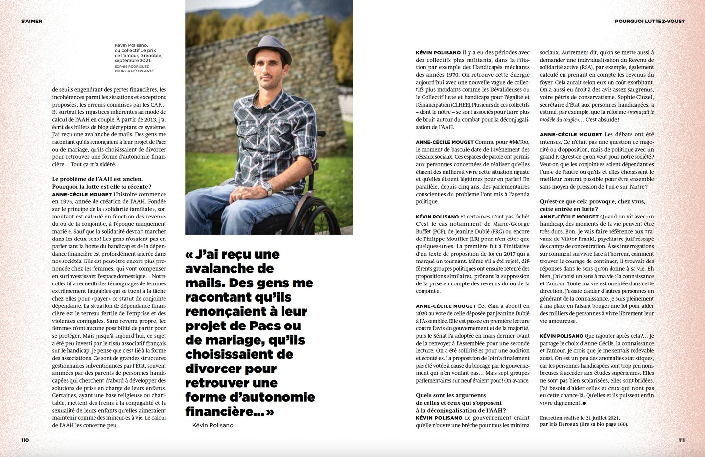
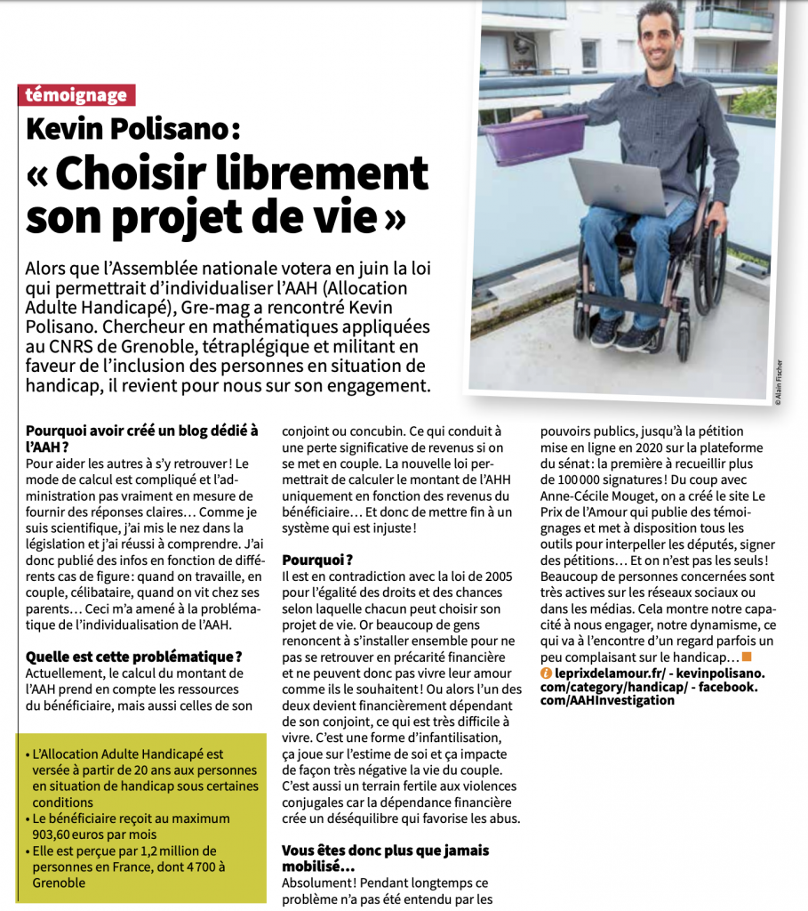
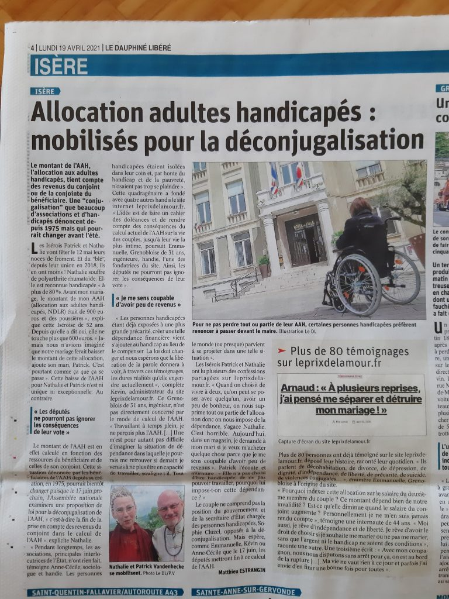

Dans la presse
Articles de presse traitant de la déconjugalisation jusqu’à son vote en 2022. Apparaissent en gras les articles mentionnant notre collectif.
2022
Juillet
- Le Monde : « La déconjugalisation de l’allocation adulte handicapé votée à l’unanimité à l’Assemblée » (21/07/2022)
- France Bleu : « Calendrier, public concerné : ce que que changera la déconjugalisation de l’allocation adulte handicapé » (21/07/2022)
- France Info : « Déconjugalisation AAH : quels changements après l’adoption de la loi ? » (21/07/2022)
- LCI : « Allocation adultes handicapés : pourquoi 45.000 bénéficiaires pourraient y perdre avec le nouveau calcul » (21/07/2022)
- Le Point : « Allocation adulte handicapé : le nouveau calcul « favorise les familles aisées » » (21/07/2022)
- Le Figaro : « Thomas Mesnier (Horizons) seul député à voter contre la déconjugalisation de l’AAH » (21/07/2022)
- RTL : « Qu’implique la déconjugalisation de l’Allocation adulte handicapé ? » (21/07/2022)
- Faire Face : « AAH : le combat pour la déconjugalisation aboutit enfin » (21/07/2022)
- Madmoizelle : « L’Assemblée nationale vote la déconjugalisation de l’AAH » (21/07/2022)
- Huffingpost : « La déconjugalisation de l’AAH adoptée à l’Assemblée nationale, une « grande victoire » » (21/07/2022)
- Sud Ouest : « Allocation adulte handicapé : l’Assemblée nationale vote la déconjugalisation » (21/07/2022)
- Europe 1 : « L’Assemblée nationale vote la déconjugalisation de l’allocation adulte handicapé » (21/07/2022)
- Europe 1 : « Déconjugalisation de l’allocation adulte handicapé : ce que va changer la réforme » (21/07/2022)
- Charente Libre : « Allocation adulte handicapé : Thomas Mesnier seul député à voter contre la déconjugalisation » (21/07/2022)
- La Voix du Nord : « Pouvoir d’achat : la déconjugalisation de l’Allocation adulte handicapé (AAH) votée à l’Assemblée » (21/07/2022)
- RFI : « France: l’Assemblée vote la déconjugalisation de l’AAH, les bénéficiaires soulagés » (21/07/2022)
- Handicap.fr : « Ça y est, l’Assemblée a voté la déconjugalisation de l’AAH » (21/07/2022)
- Capital : « Déconjugalisation de l’AAH : le profil des gagnants et des perdants de la réforme » (21/07/2022)
- Les Echos : « L’Assemblée nationale vote la déconjugalisation de l’allocation adultes handicapés » (21/07/2022)
- La Croix : « Allocation aux adultes handicapés : l’Assemblée nationale vote la déconjugalisation » (21/07/2022)
- Radio France : « Ce que signifie la déconjugalisation de l’Allocation adulte handicapé (AAH) votée par les députés » (21/07/2022)
- Le JDD : « La déconjugalisation de l’Allocation adulte handicapé approuvée par l’Assemblée » (21/07/2022)
- LCI : « La déconjugalisation de l’allocation adulte handicapé votée à l’unanimité à l’Assemblée » (21/07/2022)
- L’Opinion : « Loi pouvoir d’achat: l’Assemblée vote la revalorisation des prestations sociales et la déconjugalisation de l’AAH » (21/07/2022)
- Challenges : « France/Pouvoir d’achat : L’Assemblée approuve la déconjugalisation de l’AAH » (21/07/2022)
- L’Union : « L’Assemblée vote la déconjugalisation de l’allocation adulte handicapé » (21/07/2022)
- Le Progrès : « La déconjugalisation de l’Allocation adulte handicapé votée par les députés » (21/07/2022)
- Le Quotidien : « AAH : les revenus du conjoint ne sont plus pris en compte » (21/07/2022)
- Cnews : « Allocation Adulte Handicapé : l’assemblée nationale a voté la fin du calcul des revenus du conjoint dans le versement de l’aide » (21/07/2022)
- LCP : « Pouvoir d’achat : les députés votent la déconjugalisation de l’AAH » (21/07/2022)
- La Provence : « L’Assemblée vote la déconjugalisation de l’Allocation adulte handicapé » (21/07/2022)
- Ouest-France : « L’Assemblée nationale a voté la déconjugalisation de l’Allocation adulte handicapé » (21/07/2022)
- Le Figaro : « L’Assemblée nationale vote la déconjugalisation de l’Allocation adulte handicapé » (21/07/2022)
- Capital : « Allocation adultes handicapés : l’Assemblée nationale vote en faveur de la déconjugalisation » (21/07/2022)
- BFMTV : « L’assemblée nationale vote la déconjugalisation de l’allocation adulte handicapé » (21/07/2022)
- BFMTV : « La déconjugalisation de l’AAH : un rare moment d’unité dans une assemblée en surchauffe » (21/07/2022)
- L’Express : « Pourquoi la déconjugalisation de l’allocation adulte handicapé n’est pas pour tout de suite » (20/07/2022)
- Libération : « La déconjugalisation de l’allocation aux adultes handicapés votée à l’Assemblée » (19/07/2022)
- Handicap.fr : « Déconjugalisation de l’AAH : quels seraient les perdants? » (19/07/2022)
- LCI : « Pourquoi la déconjugalisation de l’AAH est attendue avec impatience par ses bénéficiaires ? » (19/07/2022)
- Public Sénat : « AAH : la déconjugalisation entrera « en vigueur au 1er octobre ou au 1er novembre 2023″ selon Olivier Dussopt » (19/07/2022)
- RMC : « »Le manque à gagner est de 30.000 euros ». Quand le mariage divise l’allocation adulte handicapé » (19/07/2022)
- Le JDD : « Déconjugalisation de l’allocation adulte handicapé : « Il faut aller le plus vite possible » » (19/07/2022)
- Handicap.fr : « AAH déconjugalisée : pas avant le 1er octobre 2023 ? » (18/07/2022)
- Le Parisien : « Déconjugalisation de l’allocation aux adultes handicapés : «Cette injustice doit être réglée au plus vite»… » (18/07/2022)
- Handirect : « Déconjugalisation de l’AAH, vote historique à l’Assemblée nationale » (13/07/2022)
- LCP : « Déconjugalisation de l’AAH : majorité et oppositions veulent s’accorder sur un amendement commun » (13/07/2022)
- Le Figaro : « Déconjugalisation de l’AAH : les députés repoussent la décision à l’hémicycle » (13/07/2022)
- Handicap.fr : « Déconjugalisation AAH : les députés repoussent la décision » (13/07/2022)
- France 3 : « Allocation adulte handicapé : une adoption peut-être dès cet été, le député Yannick Favennec veut le croire » (12/07/2022)
- Sud Ouest : « Déconjugalisation de l’Allocation adultes handicapés : le gouvernement prévoit un dispositif transitoire » (12/07/2022)
- Libération : « Le gouvernement se prononce en faveur de la déconjugalisation de l’allocation adultes handicapés » (12/07/2022)
- Ouest-France : « Déconjugalisation de l’Allocation Adultes Handicapés : «un dispositif transitoire» sera mis en place » (12/07/2022)
- La Provence : « Déconjugalisation de l’AAH : le gouvernement prévoit un dispositif transitoire » (12/07/2022)
- Midi Libre : « Allocation adultes handicapés : bientôt un nouveau mode de calcul pour l’AAH, découvrez ce qui change » (11/07/2022)
- 20 minutes : « Handicap : Atteinte de surdité profonde, Fiona se bat pour conserver son allocation » (09/07/2022)
- Handicap.fr : « AAH : le député Pradié reproche au gouvernement son « flou » » (08/07/2022)
- Le JDD : « Réforme de l’allocation aux adultes handicapés : pourquoi le revirement du gouvernement était attendu » (08/07/2022)
- Le Quotidien : « La déconjugalisation de l’AAH bouleverse le monde du handicap » (08/07/2022)
- Public Sénat : « Déconjugalisation de l’AAH : « Il n’y a que les imbéciles qui ne changent jamais d’avis » se félicite Stéphane Peu » (08/07/2022)
- Capital : « Déconjugalisation de l’AAH : l’opposition presse le gouvernement d’agir vite » (07/07/2022)
- La Croix : « Allocation aux adultes handicapés, bientôt un nouveau mode de calcul » (07/07/2022)
- Faire Face : « Allocation aux adultes handicapés : un pas vers la déconjugalisation » (07/07/2022)
- Handicap.fr : « AAH : Borne annonce sa déconjugalisation, enfin ! » (06/07/2022)
- Public Sénat : « Handicap : Elisabeth Borne annonce la déconjugalisation de l’AAH » (06/07/2022)
- L’Obs : « Elisabeth Borne ouvre la voie à la déconjugalisation de l’allocation adulte handicapé » (06/07/2022)
- La Depeche : « Allocation adulte handicapé : Élisabeth Borne veut une réforme « en profondeur » avec un principe de « déconjugalisation » » (06/07/2022)
- L’Indépendant : « Allocation adulte handicapé : refusée plusieurs fois par la majorité lors du précédent quinquennat, Élisabeth Borne annonce sa déconjugalisation » (06/07/2022)
- France Bleu : « Allocation adulte handicapé : « Ne plus choisir entre l’amour et le portefeuille » selon Yannick Favennec » (01/07/2022)
Juin
- Handicap.fr : « Déconjugalisation AAH : les députés vont devoir la voter? » (25/06/2022)
- Handicap.fr : « Elisabeth Borne : polémique autour de l’AAH d’une auditrice » (08/06/2022)
- Ouest France : « Échange entre Élisabeth Borne et une femme handicapée : la polémique en trois questions » (08/06/2022)
- Huffingpost : « Borne choque avec cette réponse sur l’allocation adulte handicapé » (07/06/2022)
- Ouest-France : « Handicap : ce couple est contraint de dissimuler son histoire d’amour » (03/06/2022)
Mai
Avril
- L’Humanité : « Le chef de l’État attendu sur le handicap » (26/04/2022)
- Être en Réseau : « Moi Président : Emmanuel Macron » (23/04/2022)
- Faire-Face : « AAH en couple : Macron veut « avancer » mais ne promet pas de déconjugaliser » (22/04/2022)
- Euractiv : « Débat Macron-Le Pen : l’allocation aux adultes handicapés cristallise les tensions dès les premières minutes » (21/04/2022)
- Les Échos : « Présidentielle : Emmanuel Macron prêt à « bouger » sur la question des personnes handicapées en couple » (21/04/2022)
- Libération : « Déconjugalisation de l’allocation aux adultes handicapés: «Le jour où il y aura une victoire, c’est quand cette loi sera passée» » (21/04/2022)
- 20 minutes : « Présidentielle 2022 : Au-delà de l’AAH, que proposent Emmanuel Macron et Marine Le Pen sur le handicap ? » (21/04/2022)
- L’Indépendant : « Présidentielle 2022 - Débat - Macron veut désormais « déconjugaliser l’allocation adulte handicapé » » (20/04/2022)
- La Dépêche : « Débat présidentiel : « C’est vrai que le gouvernement n’a pas voté cette mesure », le mea culpa de Macron sur l’allocation adulte handicapé » (20/04/2022)
- BFMTV : « Débat d’entre deux tours : Emmanuel Macron finalement favorable à la déconjugalisation de l’AAH » (20/04/2022)
- Sud-Ouest : « Allocation handicapés : Macron promet de « bouger » sur sa déconjugalisation » (15/04/2022)
- Libération : « Macron et la déconjugalisation de l’Allocation adultes handicapés: une volte-face opportuniste » (15/04/2022)
- Public Sénat : « Macron « prêt » à revoir l’Allocation adultes handicapés, à contre-courant de l’action de la majorité pendant cinq ans » (15/04/2022)
- Ouest-France : « Allocation adulte handicapé : Emmanuel Macron promet de « bouger » pour revoir son calcul » (15/04/2022)
- Handicap.fr : « Déconjugalisation AAH : Macron veut finalement « bouger » » (15/04/2022)
- Les Échos : « Allocation handicapés : les promesses de l’entre-deux tours de Macron » (15/04/2022)
- BFMTV : « Allocation adulte handicapé : Macron promet de « bouger » sur sa déconjugalisation » (15/04/2022)
- Marianne : « Déconjugalisation de l’AAH : Macron veut finalement « bouger »… mais sans dire comment » (15/04/2022)
- La Croix : « Allocation aux adultes handicapés : Macron entend finalement « bouger » sur la déconjugalisation »
- France Info : « Présidentielle 2022 : pour Emmanuel Macron, « on doit bouger » sur l’allocation aux adultes handicapés »
- Le Monde : « Individualisation de l’allocation aux adultes handicapés : Emmanuel Macron affirme vouloir « bouger sur ce point » »
Mars
Février
- Nouvel Obs : « Gaspard Koenig : « Cessons de mêler argent et amour ! » » (10/02/2022)
- Le JDD : « Handicap : ce que les associations attendent des candidats à la présidentielle » (01/02/2022)
Janvier
- La Voix du Nord : « Allocation aux adultes handicapés: qui va bénéficier de la hausse de 110 euros ? » (28/01/2022)
- RTL : « Allocation adultes handicapés : le mode de calcul change pour les bénéficiaires en couple » (25/01/2022)
- Midi Libre : « Allocation adultes handicapés : qui va bénéficier de la hausse de 110 euros avec la nouvelle mesure ? » (25/01/2022)
- Sud Ouest : « Handicap : le calcul de l’AAH modifié pour les bénéficiaires en couple » (24/01/2022)
- Ouest France : « Allocation adultes handicapés : Le mode de calcul change pour les bénéficiaires en couple » (24/01/2022)
- Le Parisien : « Allocation adulte handicapés : le gouvernement met en place un nouveau mode de calcul » (24/01/2022)
- Capital : « Allocation adultes handicapés : le nouveau mode de calcul pour les couples instauré » (21/01/2022)
- Madmoizelle : « La question du validisme sera-t-elle prise au sérieux par les candidats à la présidentielle 2022 ? » (14/01/2022)
2021
Décembre
- Ouest-France : « Allocation adulte handicapé en Charente-Maritime : « Être dépendant de ma compagne, psychologiquement, ce serait dur » » (08/12/2021)
- Handicap.fr : « AAH en couple : coup de gueule de l’humoriste Ferroni » (06/12/2021)
- LCP : « Handicap : L’assemblée repousse une nouvelle fois la déconjugalisation de l’AAH » (03/12/2021)
- NouvelObs : « L’individualisation de l’allocation adultes handicapés à nouveau rejetée par les députés » (03/12/2021)
- La Croix : « Allocation adultes handicapés : les députés rejettent son individualisation » (03/12/2021)
- Marianne : « Individualisation de l’AAH : nouveau rejet par les députés » (03/12/2021)
- Positivr : « Allocation adulte handicapé : Nicole Ferroni brocarde les députés de la majorité » (03/12/2021)
- Konbini : « L’individualisation de l’allocation aux personnes handicapées une nouvelle fois rejetée par les députés » (03/12/2021)
- Madmoizelle : « Encore un non : l’Assemblée nationale retoque à nouveau l’individualisation de l’AAH » (03/12/2021)
- L’info.re : « L’individualisation de l’allocation aux adultes handicapés retoquée à nouveau par les députés » (03/12/2021)
- Euronews : « Handicap : l’inclusion sociale, chère au gouvernement français, reste illusoire » (03/12/2021)
- Actu.fr : « Sarthe : dans un clip, ils interpellent Emmanuel Macron sur le sort des personnes handicapées » (03/12/2021)
- Le Figaro : « Allocation adulte handicapé : ces personnes contraintes de choisir entre vie de couple et indépendance financière » (02/12/2021)
- Handicap.fr : « AAH en couple devant l’Assemblée : c’est encore un non! » (02/12/2021)
- Capital : « Allocation adultes handicapés : une mauvaise nouvelle… avant une compensation à venir pour les particuliers » (02/21/2021)
- Le Figaro : « Individualisation de l’allocation handicapés: nouveau rejet par les députés » (02/12/2021)
- France Bleu : « Allocation adulte handicapé : « Je suis entièrement dépendante de mon mari » » (02/12/2021)
- France Info : « Allocation aux adultes handicapés : les députés rejettent à nouveau son individualisation » (02/12/2021)
- Le Monde : « Individualisation de l’allocation handicapés : nouveau rejet par les députés » (02/12/2021)
- Revue La Déferlante : « « J’ai dû renoncer à une vie de couple pour ne pas perdre mon allocation » » (01/12/2021)

Novembre
- France Bleu : « Handicap : une réforme pour améliorer l’autonomie des personnes handicapées » (29/11/2021)
- France Bleu : « Allocation adulte handicapé : « Je mets ma santé en danger, mais je ne veux plus dépendre de mon mari » » (28/11/2021)
- France Inter : « Faut-il déconjugaliser l’allocation aux adultes handicapés ? » (26/11/2021)
- Handicap.fr : « Prime de Noël et AAH : toujours pas en 2021? » (26/11/2021)
- NeonMag : « »Le couple, pour nous, c’est accepter de se retrouver en situation de dépendance », Harriet de G., militante handi-féministe » (19/11/2021)
- France Inter : « Que deviennent les deux pétitions qui ont dépassé les 100.000 signatures sur la plateforme du Sénat ? » (12/11/2021)
- Seronet : « AAH : les ONG en appellent aux chambres » (05/11/2021)
- France Assos Santé : « AAH : Stop à la dépendance financière dans le couple – Lettre ouverte à Monsieur le président du Sénat et à Monsieur le président de l’Assemblée nationale » (04/11/2021)
Octobre
- Midi Libre : « Montpellier : la future allocation adulte handicapé, où ça en est ? » (30/10/2021)
- Ouest France : « Vitré. Allocation adultes handicapés : « C’est étrange de voter ce vœu en conseil », dit la députée » (28/10/2021)
- M6 : « L’allocation adulte handicapé fait débat » (27/10/2021)
- Ouest France : « « La dernière semaine du mois c’est pâtes et Knacki », Anne raconte comment elle gère son budget » (22/10/2021)
- Handicap.fr : « Individualisation AAH : des députés remettent la pression » (22/10/2021)
- Le fil d’Actu : « Handicap : les députés contre l’autonomie des personnes » (21/10/2021)
- Le Monde : « Stéphanie Simon, une vie en fauteuil et le sentiment d’une injustice de l’Etat » (20/10/2021)
- Ouest France : « Vitré. Adultes handicapés : les élus soutiennent la déconjugalisation de l’allocation » (19/10/2021)
- Yanous : « La fille de Sophie » (15/10/2021)
- L’Union : « Allocation adultes handicapés : le Sénat vote en faveur de la déconjugalisation » (12/10/2021)
- Le Progrès : « Réforme de l’allocation adultes handicapés : le bras de fer continue au Sénat » (12/10/2021)
- Public Sénat : « Philippe Mouiller pour parler de l’Allocation adulte handicapé et de son mode de calcul » (11/10/2021)
- Public Sénat : « Allocation adultes handicapés : « Position sectaire », « froideur technocratique »… Aurélien Pradié fustige la position du gouvernement » (08/10/2021)
- Le Point : « Adultes handicapés : la charge d’un député centriste contre le gouvernement » (08/10/2021)
- Marianne : « »Démago » contre « sale méthode » : le débat sur l’allocation handicapés tourne court » (08/10/2021)
- Faire Face : « AAH en couple : devant l’Assemblée, le Gouvernement reste buté » (08/10/2021)
- L’internaute.fr : « AAH 2021 : pourquoi elle a (encore) fait débat » (08/10/2021)
- Public Sénat : « Allocation aux adultes handicapés : la « déconjugalisation », à nouveau rejetée à l’Assemblée, revient au Sénat » (07/10/2021)
- LCP : « Réforme de l’aide aux personnes handicapées : la majorité écarte la proposition de loi LR » (07/10/2021)
- 20 minutes : « Allocation adultes handicapés : L’Assemblée rejette l’individualisation du mode de calcul après un débat houleux » (07/10/2021)
- Le Figaro : « L’Assemblée rejette l’individualisation de l’allocation adultes handicapés dans une ambiance électrique » (07/10/2021)
- HuffingtonPost : « Ruffin cite Castaner lors du débat sur l’AAH: « Les cons, c’est nous » » (07/10/2021)
- France Info : « Déconjugalisation de l’AAH : le député LR Aurélien Pradié dénonce une « réponse insupportable de LREM et du gouvernement » (07/10/2021)
- France Info : « Réforme de l’allocation adultes handicapés : que propose le gouvernement ? » (07/10/2021)
- Faire Info : « Déconjugalisation de l’AAH : « Le gouvernement est gêné parce qu’il reste sur une posture idéologique », regrette l’APF France Handicap » (07/10/2021)
- Ouest-France : « Allocation adulte handicapé rejetée : le député mayennais Yannick Favennec en colère » (07/10/2021)
- Le Monde : « L’Assemblée nationale rejette l’individualisation de l’allocation aux adultes handicapés en couple » (07/10/2021)
- Ouest-France : « Handicap. Réforme de l’AAH : le bras de fer va continuer sous l’impulsion du sénateur Mouiller » (07/10/2021)
- Handicap.fr : « AAH: rejet individualisation à l’Assemblée, débat électrique » (07/10/2021)
- Madmoizelle : « Déconjugalisation de l’AAH : « Le gouvernement préfère regarder ailleurs et s’enfoncer dans ses mensonges » » (06/10/2021)
- Handicap.fr : « AAH en couple : question délicate de retour à l’Assemblée » (05/10/2021)
- Le Figaro : « Handicap: la droite dénonce l’attitude de LREM » (05/10/2021)
- Courrier Picard : « Allocation handicapés: le retour d’une question délicate à l’Assemblée » (05/10/2021)
- Actu.fr : « Aurélien Pradié, député du Lot, présente une 3e proposition de loi sur le handicap » (05/10/2021)
Septembre
- La Croix : « Le handicap, à nouveau devant l’Assemblée nationale » (27/09/2021)
- LCP : « Individualisation de l’AAH : nouvelle bataille en perspective » (27/09/2021)
- Sud Ouest : « Lot-et-Garonne : « Nous ne voulons pas être voués à la pauvreté » » (24/09/2021)
- Handicap.fr : « AAH en couple, PCH : 2 députés font une nouvelle tentative » (23/09/2021)
- Capital : « AAH : comment le gouvernement coupe l’herbe sous le pied à la déconjugalisation » (22/09/2021)
- Faire Face : « AAH en couple : une autre proposition de loi entre en jeu pour la déconjugalisation » (21/09/2021)
- Actu.fr : « Montpellier : l’appel à la déconjugalisation de l’AAH pour qu’être en couple ne soit plus un handicap » (19/09/2021)
- Sud Ouest : « Allocation adulte handicapé : « Je ne veux pas dépendre entièrement de mon conjoint » » (18/09/2021)
- Handicap.fr : « Manif en faveur de l’AAH : « Ton couple, tu le paies cash ! » » (17/09/2021)
- Le Républicain Lorrain : « Allocation adulte handicapé : pourquoi son versement fait-il débat ? » (17/09/2021)
- L’Humanité : « Handicap : pouquoi il faut déconjugaliser l’AAH » (17/09/2021)
- Le Télégramme : « 70 manifestants à Brest pour plus d’indépendance financière des adultes handicapés » (16/09/2021)
- Ouest France : « Loire-Atlantique. Une épouse handicapée : « Cette colère a toujours été là, on n’en parlait pas » » (16/09/2021)
- Ouest France : « Brest. Jeudi 16 septembre, manifestation contre « l’injustice » de l’Allocation adulte handicapé » (16/09/2021)
- Ouest France : « Vendée. Allocation adultes handicapés : « Pouvoir vivre dignement, c’est avoir son propre argent » » (16/09/2021)
- Faire Face : « AAH en couple – À Paris, le front de 22 organisations pour la déconjugalisation » (16/09/2021)
- France Info : « 300 manifestants à Dijon appellent à revoir le calcul de l’allocation adulte handicapé, « une question de dignité » » (16/09/2021)
- L’Observateur : « « Allocation Adulte Humilié » : les manifestations pour la déconjugalisation de l’AAH reprennent » (16/09/2021)
- France Bleu : « Allocation adulte handicapé : la mobilisation se poursuit en France pour la déconjugalisation » (16/09/2021)
- Sud Ouest : « Bordeaux : Cécile et Thierry se sont « non-mariés » pour conserver l’allocation adulte handicapé » (16/09/2021)
- L’indépendance : « Perpignan : Mobilisation contre la dépendance financière dans le couple pour les personnes en situation de handicap : « Une situation indigne et révoltante » » (16/09/2021)
- Ouest France : « Bretagne. Allocation adulte handicapé réduite quand on est en couple : « C’est humiliant » » (16/09/2021)
- Faire Face : « AAH en couple : « Le Gouvernement considère les personnes handicapées comme des personnes mineures » » (16/09/2021)
- L’Humanité : « Un long bras de fer autour de l’allocation adulte handicapé » (16/09/2021)
- La Croix : « Allocation aux adultes handicapés : « On ne peut pas tout faire peser sur les conjoints » » (16/09/2021)
- L’Humanité : « Handicap. « Ma vie de couple, c’est faire croire que je suis en colocation » » (15/09/2021)
- La Dépêche : « Allocation adulte handicapé à Tarbes : ne plus « dépendre » de son conjoint » (15/09/2021)
- Le Dauphiné Libéré : « Handicap : ils se battent pour la déconjugalisation de l’allocation AAH » (15/09/2021)
- Faire Face : « Pour l’Onu, la France bafoue les droits des personnes handicapées » (15/09/2021)
- Faire Face : « AAH en couple : mobilisation générale avant la dernière chance au Sénat » (14/09/2021)
- Faire Face : « AAH en couple : « Nous avons été contraints de rompre notre Pacs » » (14/09/2021)
- Handicap.fr : « AAH : stop à la dépendance financière le 16 septembre! » (14/09/2021)
- Le Télégramme : « Déconjugalisation de l’allocation adulte handicapé : un rassemblement à Brest ce jeudi » (14/09/2021)
- Le Dauphiné : « Handicap : une manifestation devant la préfecture le 16 septembre pour la déconjugalisation de l’AAH » (14/09/2021)
- Ouest-France : « Plérin. Action pour revoir l’aide aux adultes handicapés » (13/09/2021)
- Ouest-France : « Parthenay. Appel à manifester le 16 septembre pour la « déconjugalisation de l’AAH » » (11/09/2021)
- L’observateur : « HAUTMONT: 900 euros par mois pour deux » (06/09/2021)
- Ouest-France : « Orne. L’APF France handicap se mobilise pour l’autonomie financière des personnes handicapées » (05/09/2021)
- Ouest-France : « Deux-Sèvres. Handicap : un témoignage qui conforte la proposition de loi du sénateur Mouiller » (02/09/2021)
Août
- Europe 1 : « Françoise, évoque l’injustice sociale de l’AAH : son allocation handicap est calculée selon le revenu de son conjoint » (24/08/2021)
- Ouest-France : « Deux-Sèvres. Le mode de calcul de l’Allocation adulte handicapé de retour au Sénat en octobre » (24/08/2021)
- Le journal de Saône et Loire : « Allocation handicapés : « On se sent obligés de se séparer » » (10/08/2021)
Juillet
- Le journal du centre : « Allocation adulte handicapé : l’individualisation réclamée, sans succès » (26/07/2021)
- Ouest-France : « Trignac. AAH : la majorité municipale s’exprime » (14/07/2021)
- Ouest-France : « Trignac. L’allocation adultes handicapés interroge les élus » (13/07/2021)
- LCI : « »Déconjugalisation » de l’allocation adultes handicapés : le débat explosif loin d’être clos » (08/07/2021)
- LCI : « Ce couple s’aime mais divorce pour dénoncer le mode de calcul de l’allocation adultes handicapés » (08/07/2021)
- Le Télégramme : « Allocation adulte handicapé : « À la fin du mois, il faut demander pour emprunter de l’argent » » (02/07/2021)
- Le Parisien : « À Lavaur, un couple obligé de divorcer pour pouvoir toucher l’allocation adulte handicapé » (02/07/2021)
- 20 minutes : « Tarn : Mariés depuis 39 ans, Catherine et William, en situation de handicap, divorcent pour vivre décemment » (02/07/2021)
- Ouest-France : « Mariés depuis 39 ans, ils sont obligés de divorcer pour toucher l’allocation adulte handicapé » (02/07/2021)
- RTL : « Allocation adultes handicapés : « Ne divorcez pas », adresse Sophie Cluzel aux bénéficiaires » (02/07/2021)
- Cnews : « Un couple contraint de divorcer pour toucher une meilleure allocation handicapée » (01/07/2021)
- Sud-Radio : « Handicapé, il divorce pour pouvoir payer sa voiture spécialisée, « parce-que Monsieur Macron le veut » » (01/07/2021)
- Ouest-France : « Rennes. Ils réclament l’individualisation de l’allocation adulte handicapé » (01/07/2021)
Juin
- RTL : « Allocation aux adultes handicapés : un couple divorce par amour, pour contourner la loi » (30/06/2021)
- La Dépêche : « Tarn : ils choisissent de divorcer… par amour l’un pour l’autre » (29/06/2021)
- Handicap.fr : « AAH en couple : mobilisation nationale le 16 septembre 2021 » (28/06/2021)
- Handicap.fr : « AAH couple : Restreints du cœur, clip parodique et militant » (26/06/2021)
- Le Figaro : « Allocation Adulte Handicapé : pourquoi le gouvernement fait bien de tenir bon contre l’individualisation » (24/06/2021)
- Faire Face : « AAH en couple : le Sénat ne lâche pas l’affaire » (24/06/2021)
- La Montagne : « Les personnes handicapées ne veulent plus qu’on diminue ou supprime leur allocation parce qu’elles vivent en couple » (24/06/2021)
- Alternatives Économiques « « Déconjugalisation » de l’allocation adulte handicapé : pourquoi ça coince ? » (23/06/2021)
- La Vie : « Le compte n’y est pas pour les adultes handicapés en couple » (23/06/2021)
- Handicap.fr : « AAH en couple : se mobiliser pour obtenir justice » (22/06/2021)
- Handicap.fr : « AAH en couple : les sénateurs prêts à reprendre le travail » (21/06/2021)
- Handicap.fr : « AAH en couple : les asso ne vont pas lâcher l’affaire » (21/06/2021)
- La Gazette des Communes : « Allocation adulte handicapé : le gouvernement refuse l’individualisation de l’aide » (21/06/2021)
- Le Particulier : « Pour bénéficier de l’AAH, il faut déclarer ses revenus à la CAF » (21/06/2021)
- La Dépêche du Midi : « Hautes-Pyrénées : Déconjugalisation de l’AAH, entre refus d’une mesure de justice sociale et déni de démocratie pour Jeanine Dubié » (20/06/2021)
- La Dépêche : « Gisèle Biémouret aux côtés des adultes handicapés à Condom » (20/06/2021)
- Nice-Matin : « L’AAH toujours liée aux revenus du conjoint: la colère d’un bénéficiaire azuréen » (18/06/2021)
- France 3 : « Allocation adulte handicapé : passage en force du gouvernement pour faire adopter le projet de loi » (18/06/2021)
- Charlie Hebdo : « Allocation adulte handicapé : les handicapés sont les dernières roues du carrosse » (18/06/2021)
- Ouest-France : » Orne. Allocation aux adultes handicapés : la députée dénonce des « procédés anti-démocratiques » » (18/06/2021)
- France Info : « Allocation aux adultes handicapés : cinq questions sur le refus du gouvernement de « déconjugaliser » l’AAH » (18/06/2021)
- Dossier Familial : « Allocation aux adultes handicapés : le gouvernement fait voter un abattement sur les revenus du conjoint » (18/06/2021)
- Handicap.fr : « AAH : après un vote controversé, Sophie Cluzel s’explique » (18/06/2021)
- Télérama : « Allocation adulte handicapé : le brutal passage en force du gouvernement » (18/06/2021)
- Le Monde : « A l’Assemblée, débats houleux sur la « déconjugalisation » de l’allocation aux adultes handicapés » (18/06/2021)
- Sud-Ouest : « Allocation handicapés en couple : les sénateurs prêts à revoir la proposition de calcul » (18/06/2021)
- Le Figaro : « La réforme de l’allocation adulte handicapé provoque un tollé » (18/06/2021)
- Faire Face : « AAH en couple : que vaut la réforme du Gouvernement ? » (18/06/2021)
- Le Télégramme : « Allocation adulte handicapé : vives tensions à l’Assemblée, des députés quittent l’hémicycle » (18/06/2021)
- Handicap.fr : « AAH : avec le nouveau calcul, des gagnants vraiment? » (18/06/2021)
- Var-Matin : « L’AAH toujours liée aux revenus du conjoint: la colère d’un bénéficiaire azuréen » (18/06/2021)
- France Info : « Allocation adulte handicapé : Eric Piolle dénonce un « mépris » et un « passage en force » du gouvernement » (18/06/2021)
- RTL : « Handicap : « quand on fait un vote bloqué, on ne respecte pas la démocratie », réagit Patrick Vignal » (18/06/2021)
- RTL : « Pourquoi les personnes handicapées en couple s’inquiètent pour leur allocation » (17/06/2021)
- La Nouvelle République : « Handicap : le « prix de l’amour » en débat à l’Assemblée » (17/06/2021)
- Vosges Matin : « Adultes handicapés : le gouvernement passe en force contre « l’individualisation » de l’allocation » (17/06/2021)
- L’Union : « Réforme de l’allocation aux adultes handicapés : l’opposition furieuse contre le gouvernement » (17/06/2021)
- Capital : « Allocation aux adultes handicapés : le gouvernement passe en force contre la « déconjugalisation » » (17/06/2021)
- 20 minutes : « Réforme de l’AAH : « Je suis tout sauf handiphobe » assure Sophie Cluzel, secrétaire d’État chargée des personnes handicapées » (17/06/2021)
- Public Sénat : « Réforme de l’Allocation Adulte Handicapé : le gouvernement bloque le vote des députés dans une ambiance électrique » (17/06/2021)
- Ouest-France : « Percevoir l’Allocation adulte handicapé ou être en couple, le cruel choix » (17/06/2021)
- Ouest-France : « Nantes. Valérie Oppelt veut que le gouvernement aille plus loin sur le handicap » (17/06/2021)
- Ouest-France : « Deux-Sèvres. Handicap : Delphine Batho dénonce le « honteux coup de force du gouvernement » » (17/06/2021)
- France Bleu : « Réforme de l’AAH : « la majorité piétine la démocratie et les handicapés » dénonce le député Yannick Favennec » (17/06/2021)
- Huffingpost : « Allocation adulte handicapé: à l’Assemblée, les députés d’opposition vent debout » (17/06/2021)
- Faire Face « AAH en couple : le Gouvernement passe en force pour rejeter la déconjugalisation » (17/06/2021)
- Numerama : « Allocation adultes handicapés : non, notre « système informatique » n’est pas le problème » (17/06/2021)
- LCP : « Individualisation de l’AAH. Le vote bloqué provoque la colère de l’opposition » (17/06/2021)
- Le Monde : » La conjugalisation du calcul de l’Allocation adulte handicapé produit des effets inverses à ceux souhaités » (17/06/2021) Liste des signataires de la Tribune
- Marianne : « Vote bloqué sur l’allocation adulte handicapé : « LREM n’était pas sûre de ses députés » (17/06/2021)
- Le Parisien : « Allocation adulte handicapé : le gouvernement passe en force à l’Assemblée » (17/06/2021)
- Handicap.fr : « AAH : pourquoi les députés ont refusé l’individualisation? » (17/06/2021)
- Libération : « Allocation adultes handicapés : le vote bloqué fait hurler l’Assemblée » (17/06/2021)
- Libération : « Sophie Cluzel sur l’AAH : «Je ne veux pas que le handicap soit instrumentalisé par certains partis politiques» » (17/06/2021)
- Libération : « Handicap et violences conjugales : «Je n’en peux plus de devoir faire la manche» » (17/06/2021)
- Causette : « Déconjugalisation de l’AAH : « Les députés qui ne prennent pas le train en marche le regretteront par la suite » » (17/06/2021)
- Le Monde « Le débat sur la « déconjugalisation » de l’allocation aux adultes handicapés revient à l’Assemblée » (16/06/2021)
- Mediapart : « AAH: «C’est une question de justice, de dignité», selon Élisa Rojas » (16/06/2021)
- Mediapart : « Allocation adulte handicapé : le gouvernement s’accroche pour ne pas la réformer » (16/06/2021)
- Les Échos : « Nos politiques sociales, reflet de notre inertie patriarcale » (16/06/2021)
- Handicap.fr : « AAH et revenus du conjoint: pourquoi la pétition supprimée? » (16/06/2021)
- France Bleu : « »On nous renvoie une image de boulet » : dans un clip, des handicapés réclament un calcul individuel de l’AAH » (15/06/2021)
- Handicap.fr : « AAH en couple : dernière pression sur les députés! » (15/06/2021)
- Handicap.fr : « Ils ont manifesté pour la déconjugalisation de l’AAH » (14/06/2021)
- Libération : « L’Allocation adulte handicapé indexée sur le revenu du conjoint, «c’est la double peine» » (13/06/2021)
- L’Express : « Allocation adulte handicapé : derrière la question de la déconjugalisation, celle de l’autonomie » (13/06/2021)
- Ouest-France : « Des personnes handicapées manifestent pour changer le mode de calcul de leur allocation » (13/06/2021)
- Le Figaro : « Environ 200 personnes handicapées manifestent pour la déconjugalisation de l’AAH » (13/06/2021)
- France Info : « »C’est pour nous une double peine » : les personnes en situation de handicap ne veulent plus dépendre financièrement de leur conjoint » (13/06/2021)
- Libération : « Handicap : ne pas ajouter la dépendance économique » (11/06/2021)
- Ladepeche.fr : « Gers : « Continuer le combat » pour le handicap » (11/06/2021)
- La Voix du Nord : « Lille: une trentaine de personnes pour défendre l’allocation adulte handicapé » (11/06/2021)
- L’Humanité : « Handicap Le gouvernement ne veut pas déconjugaliser le calcul de l’allocation » (10/06/2021)
- LCP : « Individualisation de l’AAH : en Commission la majorité oppose une fin de non recevoir » (09/06/2021)
- Faire Face : « AAH en couple : l’individualisation s’éloigne » (09/06/2021)
- Handicap.fr : « AAH en couple: la majorité détricote son individualisation » (09/06/2021)
- L’Obs : « AAH : gouvernement et majorité détricotent la déconjugalisation » (09/06/2021)
- Capital : « AAH : contre la déconjugalisation, le gouvernement propose une solution bis » (08/06/2021)
- Faire Face : « AAH en couple : le Gouvernement contre-attaque » (08/06/2021)
- Midi Libre : « Handicap : la lettre ouverte d’une Bagnolaise à Emmanuel Macron sur le nouveau barème de l’AAH » (06/06/2021)
- Faire Face : « Déconjugalisation de l’AAH : faut-il y croire ? » (04/06/2021)
- La Voix du Nord : « À Haubourdin, si Claire fonde un foyer avec Mathias, elle risque de perdre son allocation pour adulte handicapé… » (02/06/2021)
Mai
- Faire Face : « Handicap, l’amour sous condition de ressources : un documentaire édifiant sur Public Sénat » (31/05/2021)
- Midi Libre : « Handicapée, une Bagnolaise témoigne : « Je dois vivre aux crochets de mon mari » (30/05/2021)
- Ouest France : « Rezé. Les élus adoptent un vœu sur le handicap » (28/05/2021)
- GreMag : « Kévin Polisano : Choisir librement son projet de vie » (17/05/2021)

Avril
- Public Sénat : « Handicap, l’amour sous condition de ressources » (27/04/2021)
- Public Sénat : « Philippe Mouiller dans Bonjour chez vous ! » (27/04/2021)
- France 5 (L’œil et la main) : « Aah, mon amour ? » (26/04/2021)
- Le Dauphiné : « Isère : ils se mobilisent pour la « déconjugalisation » de l’Allocation adultes handicapés » (19/04/2021)

- APF France handicap : « Déconjugalisation de l’AAH : soutenons les initiatives citoyennes ! » (19/04/2021)
- Le Télégramme : « L’Allocation adulte handicapé, un sujet d’actualité qui bouleverse la Plouzanéenne Bernadette Niberon » (16/04/2021)
- Madmoizelle : « Continuons à soutenir la réforme de l’AAH : signez aussi la pétition pour l’Assemblée ! » (07/04/2021)
- Faire Face : « AAH en couple : « Nous avons décidé de ne plus nous taire » » (02/04/2021)
- Saumur-kiosque : « Allocation Adulte Handicapé : le Conseil régional des Pays de la Loire vote pour ! » (01/04/2021)
- Konbini : « Vidéo : avec l’allocation adulte handicapé, l’amour a un prix » (01/04/2021)
Mars
Politis : « Vers plus d’autonomie pour les personnes en situation de handicap » (30/03/2021)
Handicap.fr : « AAH en couple : vous êtes perdant, témoignez ! » (25/03/2021)
NeonMag : « Pour notre autonomie, nous appelons à la déconjugalisation de l’Allocation Adulte Handicapé » (24/03/2021)
Konbini : « Le Speech de Stéphanie Simon » (24/03/2021)
Sudouest : « Allocation ou vie de couple ? Le dilemme des personnes handicapées » (23/03/2021)
Handicap.fr : « AAH et revenus du conjoint : 15 arguments pour comprendre » (19/03/2021)
Faire Face : « AAH en couple : l’Assemblée nationale votera le 17 juin » (19/03/2021)
Libération : « Allocation aux adultes handicapés : le texte finalement de retour à l’Assemblée nationale » (19/03/2021)
Carenews : « Droits des personnes handicapées : « Il existe un déséquilibre entre l’expression des personnes et les réponses mises en place » » (17/03/2021)
La Voix du Nord : « Lambersart : elle réclame le droit, pour les handicapés, de ne pas dépendre financièrement de leur conjoint » (17/03/2021)
Libération : « «Je ne me bats pas pour moi» : une femme en grève de la faim pour que l’allocation aux adultes handicapés revienne à l’Assemblée » (16/03/2021)
Handicap.fr : « AAH : des pétitions alertent maintenant les députés » (16/03/2021)
France Bleu : « Allocation adulte handicapé : pourquoi la prise en compte des revenus du conjoint fait-elle débat ? » (10/03/2021)
Faire Face : « AAH en couple : le Sénat dit oui… mais ce n’est pas fini » (10/03/2021)
Public Sénat : « Allons plus loin » (09/03/2021)
Libération : « Le Sénat vote en faveur de l’individualisation de l’allocation aux adultes handicapés » (09/03/2021)
France Info : « Handicapés en couple : le Sénat se saisit du mode de calcul contesté de l’AAH » (09/03/2021)
Libération : « La réforme de l’allocation aux adultes handicapés ferait-elle tant de perdants que ça ? » (09/03/2021)
La voix du nord : « Handicapés en couple : le Sénat se penche sur l’individualisation de l’allocation » (09/03/2021)
Faire Face : « Le ton monte pour la réforme de l’AAH en couple » (09/03/2021)
Handicap.fr : « Les sénateurs votent pour l’individualisation de l’AAH » (09/03/2021)
Capital : « Allocation aux adultes handicapés : à qui profiterait la non-prise en compte des revenus du conjoint ? » (09/03/2021)
Handicap.fr : « AAH en couple: le Sénat pour, le gouvernement contre » (09/03/2021)
La Nouvelle République : « Allocation Adultes Handicapés : la fin d’une « incongruité » ? » (04/03/2021)
Arte : « Être autonome financièrement comme tout le monde » (03/03/2021)
Arte : « Les injustices de l’allocation handicapée » (03/03/2021)
France 3 : « Tourcoing : un faux mariage pour dénoncer le mode de calcul de l’allocation adulte handicapé » (07/03/2021)
Interview de Philippe Mouiller : « Les Républicains veulent-ils une AAH pour les couples ? » (05/03/2021)
Faire Face : « AAH en couple : le Sénat ouvre la porte à l’individualisation » (04/03/2021)
Capital : « AAH : ne plus prendre en compte les revenus du conjoint coûterait 560 millions d’euros, selon le sénateur Philippe Mouiller » (03/03/2021)
20 minutes : « Les sénateurs donnent leur feu vert à la désolidarisation du revenu du conjoint pour le calcul de l’AAH » (03/03/2021)
Handicap.fr : « AAH individualisée : un espoir avant la fin du quinquennat? » (03/03/2021)
Public Sénat : « Allocation adultes handicapés : le Sénat accepte l’individualisation » (03/03/2021)
La Nouvelle République : « Allocation adulte handicapé : le rapport du sénateur Philippe Mouiller prône le changement » (02/03/2021)
France 3 : « Deux-Sèvres : handicapé, il divorce pour conserver son allocation » (01/03/2021)
Février
- La Nouvelle République : « Allocation adulte handicapé : le sénateur Philippe Mouiller au rapport » (25/02/2021)
- La Nouvelle République : « Le couple ou les aides : les handicapés doivent choisir » (25/02/2021)
- La Depeche : « Une femme handicapée voit son allocation passer de 358 € à 11 centimes par mois » (20/02/2021)
- Ouest-France : « Son allocation adulte handicapé passe de 358 € à… 11 centimes ! » (19/02/2021)
- RMC : « Une pétition de 100.000 signatures pour relancer la réforme de l’allocation adultes handicapés » (19/02/2021)
- Public Sénat : « Sophie Cluzel : « L’individualisation de l’allocation adultes handicapés réduit à néant le fondement de notre solidarité » » (18/02/2021)
- Handicap.fr : « AAH individualisée : Sophie Cluzel ne se dit « pas favorable » (18/02/2021)
- Ouest-France : « L’amour a un prix pour les personnes en situation de handicap » (15/02/2021)
- Handicap.fr : « AAH individualisée: pour « Osez le féminisme » il y a urgence! » (15/02/2021)
- Ouest-France : « Handicap. Osez le féminisme ! demande de « désolidariser » l’allocation des revenus du conjoint » (14/02/2021)
- Le Parisien : « Allocation adulte handicapé : les revenus du conjoint ne seront plus pris en compte » (14/02/2021)
- France Inter : « Sophie Cluzel : « Nous avons 12 millions de personnes en situation de handicap, adultes et enfants » (14/02/2021)
- Capital : « Allocation aux adultes handicapés : la prise en compte du revenu du conjoint supprimée à l’Assemblée nationale » (13/02/2021)
- Le Point : « Handicap : les députés adoptent une proposition de loi contre l’avis du gouvernement » (13/02/2021)
- Handicap.fr : « AAH individualisée : le Sénat ouvre une première porte… » (11/02/2021)
- Handicap.fr : « AAH et revenus du conjoint : tout comprendre en vidéo » (08/02/2021)
- Libération : « Découpler l’allocation aux adultes handicapés des revenus du conjoint » (05/02/2021)
- Ouest-France : « Handicap. Sa pétition sur le calcul de l’Allocation adulte handicapé jugée recevable par le Sénat » (04/02/2021)
Janvier
- Le JDD : « Handicap : une pétition pour saisir le Sénat dépasse pour la première fois les 100.000 signatures » (29/01/2021)
- 20 minutes : « La réforme de l’allocation aux adultes handicapés (AAH) bientôt relancée grâce à une pétition » (27/01/2021)
- France inter : « Poussé par une pétition, le Sénat envisage de revoir l’attribution de l’allocation Adulte Handicapé » (26/01/2021)
- Libération : « Allocation aux adultes handicapés : «Je n’ai pas envie de me coincer avec un mec parce que je n’ai pas d’argent» » (23/01/2021)
- Faire Face : « AAH en couple : les clics poussent le Sénat au déclic » (21/01/2021)
- Capital : « Allocation aux adultes handicapés : les sénateurs se penchent sur le changement de son calcul pour les couples » (21/01/2021)
- Ouest-France : « Handicap : le sénateur Philippe Mouiller rapporteur d’une proposition de loi au Sénat » (21/01/2021)
- France inter : « Handicapés, restez entre pauvres ! - Le Moment Meurice » (19/01/2021)
- Bastamag : « Une pétition au Sénat pour une véritable autonomie des personnes en situation de handicap » (18/01/2021)
- Sud Radio : « Interview de Sophie Cluzel » (18/01/2021)
- Faire Face : « Les femmes handicapées arrachent les violences au silence » (17/01/2020)
- Faire Face : « AAH en couple : « Il faut réussir à faire bouger les sénateurs. » » (15/01/2021)
- Slate : « Le calcul de l’allocation aux adultes handicapés organise une dépendance intenable dans le couple » (08/01/2021)
- NeonMag : « Allocation adultes handicapés ou vie de couple, il faut choisir. Quand est-ce que ça change ? » (06/01/2021)
2020
- Libération : « Le Sénat sous la pression d’une pétition pour l’autonomie financière des personnes handicapées » (31/12/2020)
- Faire Face : « AAH en couple : les appels au Sénat se font de plus en plus pressants » (22/12/2020)
- Handicap.fr : « Pour une AAH individualisée : la mobilisation se renforce » (22/12/2020)
- La Voix du Nord : « Allocation adulte handicapé: ils demandent la désolidarisation des revenus du conjoint » (19/12/2020)
- Handicap.fr : « AAH désolidarisée : la Défenseure des droits prend position! » (18/12/2020)
- Handicap.fr : « AAH ou amour, il faut choisir : une mesure dans l’impasse » (11/12/2020)
- Faire Face : « Nicole Ferroni : « Je veux dénoncer des situations absurdes et injustes auxquelles sont confrontées les personnes handicapées. » » (09/12/2020)
- Le billet de Nicole Ferrony « AAH : handicap ou amour, il faut choisir ! » (09/12/2020)
- Faire Face : « Droits des personnes handicapées : la France ne respecte pas ses engagements internationaux » (21/07/2020)
- Handicap.fr : « AAH et revenus du conjoint : covid, l’occasion d’agir? » (10/04/2020)
- Handirect : « AAH et revenus du conjoint : Un texte qui pourrait enfin les dissocier ! » (12/03/2020)
- Handicap.fr : « 3000 femmes handicapées se mobilisent pour leurs droits » (07/03/2020)
- France inter : « Comment Jennifer a vu son allocation handicapé fondre parce qu’elle s’est mise en couple » (05/03/2020)
- Faire Face : « AAH en couple : l’humoriste Nicole Ferroni salue les députés qui ont voté contre l’avis du gouvernement » (19/02/2020)
- Faire Face : « AAH en couple : l’Assemblée nationale dit stop à la prise en compte des ressources du conjoint » (14/02/2020)
- Le Monde : « Allocation adulte handicapé : les députés votent une valorisation, contre l’avis du gouvernement » (13/02/2020)
2019
- Faire Face : « Violences : « Si une femme ne perçoit plus l’AAH car son conjoint travaille, elle ne peut pas partir. » » (29/11/2019)
- Faire Face : « AAH en couple : « Je demande à être reconnu comme une personne à part entière. » » (05/11/2019)
- Le billet de Nicole Ferrony « Handicap : le prix de l’amour » (13/11/2019)
- Faire Face : « AAH en couple : « Je demande à être reconnu comme une personne à part entière. » » (29/10/2019)
- Faire Face : « AAH en couple : les cinq raisons pour lesquelles le gouvernement refuse de changer les règles » (11/03/2019)
- RMC : « 45% des femmes handicapées se déclarent dépendantes de leur conjoint » (08/03/2019)
- RMC : Allocation adulte handicapé dégressive: « Je suis déjà dépendante de mon handicap et en plus je dois l’être de mon conjoint » (08/03/2019)
- BFMTV : « Allocation adulte handicapé dégressive: « Je suis déjà dépendante de mon handicap et en plus je dois l’être de mon conjoint » » (08/03/2019)
- Yanous : « AAH : Une question de bon sens » (01/03/2019)
- Faire Face : « Grand débat et handicap : Sophie Cluzel dit non à tout » (09/02/2019)
- Faire Face : « Grand débat et handicap : le top 4 des réclamations » (07/02/2019)
- Handicap.fr : « AAH et revenus du conjoint : nouvelle tentative de députés ! » (29/01/2019)
2018
- Public Sénat : « Allocation adulte handicapé : Laurence Cohen dénonce le « blablabla » du gouvernement » (26/10/2018)
- Faire Face : « AAH en couple : le Sénat rejette la suppression des ressources du conjoint » (24/10/2018)
- Handicap.fr : « AAH et revenus du conjoint : tentative rejetée par le Sénat » (24/10/2018)
- Yanous : « AAH : les couples resteront punis » (19/10/2018)
- Handicap.fr : « AAH et revenus du conjoint : le Sénat lutte à son tour » (09/05/2018)
- Faire Face : « AAH en couple : la majorité s’oppose à la suppression des ressources du conjoint » (04/04/2018)
- Handicap.fr : « AAH et revenus du conjoint : ce n’est pas prêt de bouger » (04/04/2018)
- Faire Face : « Des députés de tous bords veulent rendre plus juste l’AAH en couple » (24/01/2018)
- Handicap.fr : « 50 députés contre la prise en compte des revenus du conjoint » (23/01/2018)
2017
- Faire Face : « AAH en couple : vers une loi pour ne plus prendre en compte les revenus du conjoint ? » (21/12/2017)
- Handicap.fr : « AAH et revenus du conjoint : des députés proposent ! » (18/12/2017)
- Faire Face : « AAH : le gouvernement précise les effets de sa réforme sur les allocataires en couple » (12/10/2017)
- Extrait du documentaire « Sous le radar » (Planète+ CI) : « Handicap : Le combat des citoyens oubliés » (02/10/2017)
- Faire Face : « Citoyens handicapés, vidéos au poing » (28/09/2017)
- Faire Face : « AAH : les allocataires en couple ne perdront pas un euro, assure le secrétariat d’État chargé des personnes handicapées » (25/09/2017)
- Faire Face : « AAH en couple : combien allez-vous perdre ? » (21/09/2017)
- Faire Face : « AAH et vie en couple : « Mon mari doit prendre en charge mon handicap ! » » (23/07/2017)
- Faire Face : « AAH et vie en couple : « Mon mari doit prendre en charge mon handicap ! » » (07/04/2017)
- Faire Face : « AAH et vie en couple : « C’est moi qui suis handicapée, pas mon conjoint ! » » (23/03/2017)
- Faire Face : « L’amour au prix de l’AAH » (10/01/2017)
2016
- Faire Face : « AAH et vie en couple : une pétition réclame justice pour les personnes handicapées » (18/03/2016)
2014
- Faire Face : « Le mariage enfin pour tous ? » (15/10/2014)
- Faire Face : « L’AAH pour les nuls, sur le blog de Kevin Polisano, un doctorant handicapé » (09/09/2014)
2013
- Faire Face : « Le mariage pour tous sauf pour les bénéficiaires de l’allocation adulte handicapé » (12/02/2013)